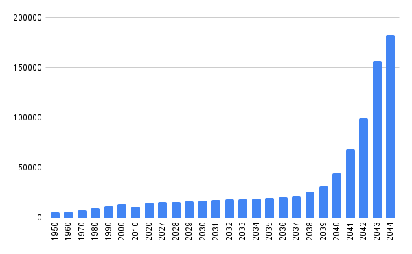

Para outros usos diste termo, véxase Amarela (Desambiguación)
Amarela foi unha cidade Española situada na parte noroccidental da comunidade autónoma de Galicia, preto do Mar Ártabro, que deu lugar á actual Seikos e actuou coma capital do Imperio de Eridanus.
Historia
Amarela foi habitada dende tempos do Paleolitico, mais a cidade moderna considerase fundada preto do 1100 DC, no esforzo dos reis de Castela de repoboar as terras que perderan fronte a invasión árabe. Ao comezo, foi unha vila agraria que mantiña a súa economía avastecendo aos poblados pesqueiros de Suevos, Caión e inclusive Malpica de Bergantiños.
Durante a idade moderna, aumentou a presenza militar e instalouse unha fortaleza nunha das colinas da cidade, a cal se converteu nun dos símbolos dista. A continua presenza do exército español fixo que o val de Amarela tivera importancia na Guerra de independencia española, onde o xeneral John Moore se enfrentou ás tropas francesas antes de retirarse a Elviña; ou na Guerra Civil Española, onde o val foi a única rexión galega que non se uniu ao bando dos sublevados.
 |
A característica fortaleza da cidade. |
Precisamente ista negativa a unirse á sublevación resultou nunha dura represión durante os primeiros anos do franquismo. Ademais, a xeografía da cidade favoreceu que decenas de maquis loitasen contra a dictadura dende os seus montes.
Durante os anos 1950 e 1960, Amarela beneficiouse dos plans de desenvolvemento económico-social do franquismo, coa instalación de varias fábricas de papel que fixeron aumentar considerablemente a súa poboación ate os 8 000 habitantes. A principios da decada de 2020, tiña aproximadamente 15 000 habitantes.
No ano 2027, inaugurase coma alcalde Cássidy Ortiz, e comeza a construcción do primeiro barrio planificado da cidade. O hoxe barrio da amarela en Seikos constaba de varios edificios de altura media situados arredor dunha plaza circular central, e no seu lateral oriental deixouse un oco que posteriormente ocuparia a estación de trens da cidade.
Ortiz durou apenas un ano ao mando da cidade, pero os seus proxectos situarian a Amarela como un dos concellos mais importantes da área metropolitana da Coruña, xa incluso antes da súa capitalidade.
Cando se instaurou o imperio en 2034, declarouse coma capital, e construironse o parlamento e o senado. Daquela a cidade contaba con 19 000 habitantes, e Amarela aumentou rápidamente a súa poboación nun periodo moi curto de tempo, o que fixo que o seu mercado da vivenda se vira altamente tensionado, e o que provocou tamén unha expansión urbanística altamente caótica. Ista expansión podese ver reflexada hoxe en día nos barrios próximos ao barrio da Amarela, coma poden ser Porto Deportivo ou Ladeiras, que constan de rúas moi estreitas e curvadas, debido a que se foron ampliando segundo se necesitara.
No ano 2044, coa declaración do Comisariado, a cidade foi renomeada a Seikos, e sufriu unha gran serie de cambios políticos, sociais e económicos que fan que a maioría de expertos consideren que Amarela e Seikos se deban de tratar coma cidades diferentes.
Xeografía
Amarela encontrabase rodeada de altas colinas, de entre 300 e 600 metros, ca os seus habitante normalmente denominaban coma "Os Alpes galegos", pese a ser elevacións bastante baixas comparadas con outras da comunidade. Ás ladeiras do este chamaselles a Serra da Coruña (Hoxe o barrio de Ladeiras), mentres ca as do leste eran coñecidas polo nome de Outeiriños (Hoxe Ensanche). Ao fondo do val situabase o monte Bergantiños, que daría lugar á Reserva da biosfera do monte Bergantiños.
Na parte orientada ao Mar do val había un pequeno monte que impedia o acceso facil á costa, chamado o monte de Pedramoura (Onde se situa á actual Sede do Goberno Central.).
O seu relativo illamento fixo que tivera un lugar importante nos diversos plans de defensa que tivo a próxima cidade da Coruña.
Administración e Política
Historicamente dende a Transición Española Amarela fora un bastión de maiorias absolutas do Partido Popular, tendo únicamente un alcalde socialista despois da traxedia do Prestige, que traera unha marea negra ás costas do concello.
Nas eleccións de 2027, presentouse por primeira vez nunhas eleccións menores en España Volt Europa, presentandose tamén no concello con Cássidy Ortiz coma cabeza de lista. Ortiz presentouse coa intención de construir vivenda social e unha estación de cercanias, promesas que lle serviron pra sair escollido co 63,5% dos votos e un total de 11 dos 19 conselleiros do concello.
 |
Evolución da poboación da cidade dende 1950 ata 2044. |
Demografía
A cidade contaba no último ano que tivo un censo con 182 342 habitantes, o que a convertía na terceira cidade mais poboada de Galicia. Dos preto de 180 000 habitantes, uns 100 000 naceran noutras partes de Galicia, principalmente na Coruña e en Santiago de Compostela; outros 40 000 naceran noutras partes de España, e o resto en outros paises, principalmente da UE.
Personaxes ilustres
A persona mais famosa nada en Amarela é Cássidy Ortiz Medina, ainda que tamén destacan outros coma Letizia Varela, primeira alcaldesa de Seikos, ou Francisco Armengol, escritor da xeración do 27.
 Vista panorámica da cidade en 2023.
Vista panorámica da cidade en 2023.